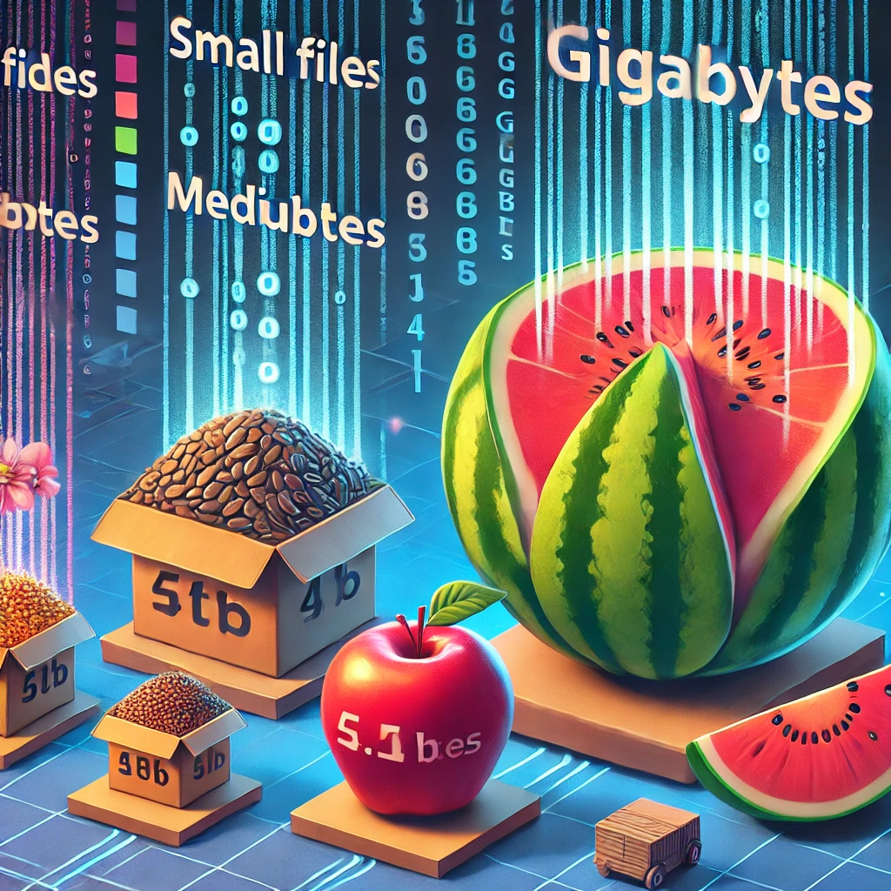
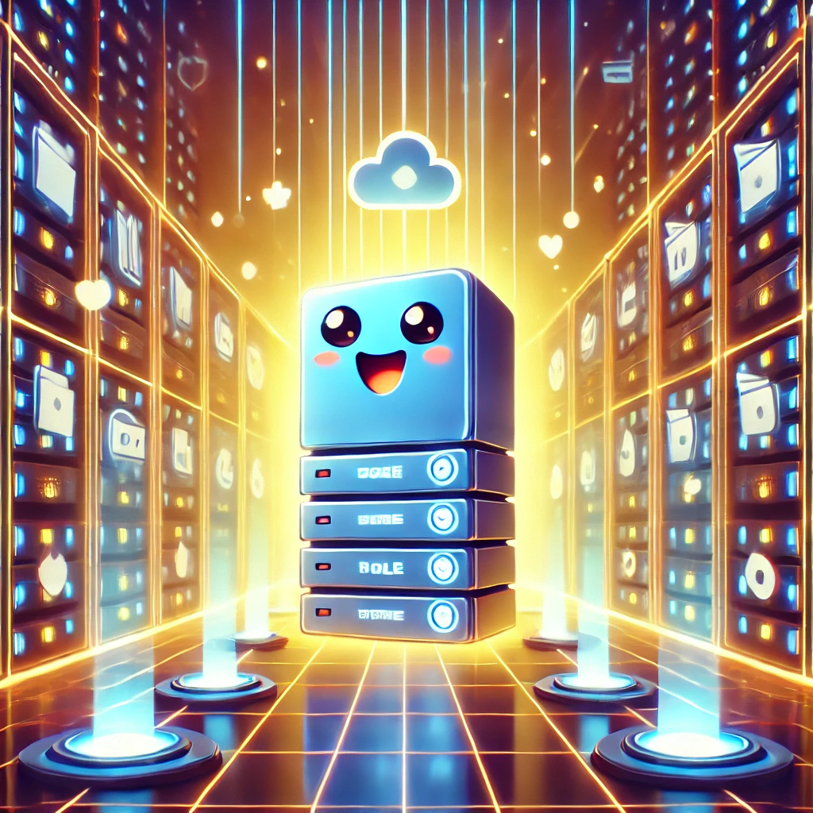

Ой-ой, здається, наш сервер потрапив у біду! Він перевантажений файлами, як повітряна кулька, що ось-ось лусне. Якщо ми не допоможемо, він може вимкнутися, і всі наші ігри та мультфільми пропадуть!
💾 Майстер Мегабайтів 🚀

Але не хвилюйтеся! На щастя, є я — майстер мегабайтів! Я можу розібратися з цим файловим безладом. Щоб врятувати сервер, потрібно дізнатися, які файли займають найбільше місця. Але як це зробити?

Виявляється, файли бувають різного розміру. Деякі маленькі, як зернятка, і займають кілька кілобайтів (КБ). Інші трохи більші, як яблука, і займають мегабайти (МБ). А є й такі, як величезні кавуни, - вони займають гігабайти (ГБ).

Давайте подивимось на файли сервера. Ага, тут є декілька малюнків по 500 КБ, відео на 1 ГБ, і купа документів по 2 МБ. Ого! Нам доведеться попрацювати головою, щоб все порахувати.
Ми не можемо видаляти важливі файли! Але ми можемо їх стиснути, як повітря в пакеті. Так вони займатимуть менше місця. Ми також можемо зберегти деякі з них на іншому диску.
Перемістимо великі відео на спеціальний архівний диск, стиснемо документи та картинки. Таким чином звільнимо багато місця на нашому сервері.

Вау! Сервер дихає спокійно. Ми звільнили купу місця! Тепер усі ігри та мультфільми знову працюють без проблем.
Ми — справжні майстри мегабайтів! Тепер ми знаємо, як працює пам'ять комп'ютера і як обчислювати об'єм файлів. З нами все буде гаразд!
Тож пам’ятайте, кожен файл має свій розмір, і важливо знати, скільки місця він займає на нашому комп’ютері. І хто знає, можливо, ви також станете майстром мегабайтів!